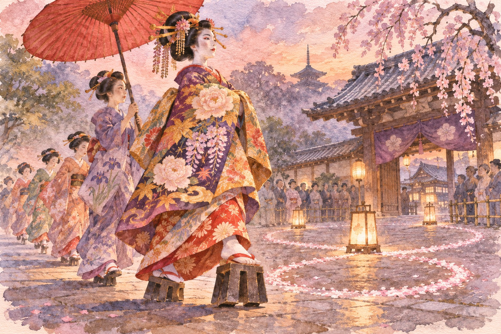

Kyoto · Sagano · one morning · Saturday 14 November 2026
The Courtesan Who Was Born at Seiryōji's West Gate
Once a year the temple behind Arashiyama holds a memorial for a woman the stage made famous, and a tayū from Shimabara walks through the precinct in full dress. It is a one-hour event with no tickets, no seats, and almost nothing about it in English.
夕霧祭 Yūgiri-saiSeiryōji (清凉寺) · Sagano, KyotoFacts checked November 2026
AI-generated illustration · An imagined scene, not a photograph or an exact depiction of the place or event.
You have walked the bamboo path in Arashiyama and been pushed along the Togetsukyō bridge with everyone else. In the same Sagano district stands Seiryōji (清凉寺), also called Saga Shakadō (嵯峨釈迦堂), a large temple away from the bamboo-path crowd. On one Saturday in November it fills with a different crowd: people who have come to watch a tayū (太夫), the highest rank of courtesan, walk across the grounds.
The occasion is the Yūgiri-sai (夕霧祭), a memorial service for Yūgiri Tayū (夕霧太夫). Kyoto City's tourism site lists the 63rd one for 14 November 2026. You trade the geisha-spotting of Gion for something quieter and stranger: a ritual remembering a person who may be half real and half theatre.
Who Yūgiri was, and where the name comes from夕霧太夫 · Yūgiri Tayū
The official description is short. Yūgiri was born beside the west gate of Seiryōji, raised in Kyoto's Shimabara (島原) pleasure quarter, and reached her peak in Osaka, at a house called Ōgiya (扇屋, "the fan house"). A memorial for her soul is held at the temple where she was born.
That is a record of a place, not a biography, and the fuller story lives in kabuki and puppet theatre. The playwright Chikamatsu Monzaemon wrote Kuruwa Bunshō (廓文章), in which Yūgiri's lover is the ruined merchant's son Fujiya Izaemon (藤屋伊左衛門). Later plays kept returning to the pair. A Kyoto confectioner now sells a sweet for the day: Izaemon's winter braided hat, made of nama-yatsuhashi (生八ッ橋) and filled with Ogura bean paste, a name taken from the Ogura district of Sagano where Seiryōji stands.
Tombs are claimed in two cities: Seiryōji in Kyoto, and Jōkokuji (浄国寺) in Osaka. The route of her story is also the route of the day: Saga, Shimabara, Osaka.
The only one of the three places where you can see anything on 14 November is the first.
What actually happens on the day法要・太夫道中・お点前
Kyoto City's listing gives three timed parts. At 10:10 a memorial service starts in the main hall (本堂). From 11:00 to about 11:20 comes the tayū dōchū (太夫道中), the slow ceremonial walk of a tayū through the precinct; the listing marks it as cancelled in rain. From about 12:45 to 13:30 a tayū serves tea in the grounds. A Shimabara tayū also performs a dance dedicated to Yūgiri.
A tayū in procession is not a geisha on her way to work. She wears layers of heavy silk and walks in extremely tall lacquered clogs, in a figure-of-eight pattern at a pace much slower than anyone walks. The point is to look at it for twenty minutes. The 11:00 slot is the one to plan around.
If you are looking for the procession, ask staff: 太夫道中はどこですか (tayū dōchū wa doko desu ka). If the sky is grey, ask: 雨天中止ですか (utenchūshi desu ka), "is it cancelled for rain?"

AI-generated illustration — not an on-site photograph. An imagined scene inspired by this section, not an accurate depiction of the real place, objects or event.
Getting there: Kyoto City Bus 28 to "Saga Shakadō-mae" (嵯峨釈迦堂前), the stop given in the official listing. Check your own departure point in a bus app: I did not verify the journey time.
When: Sat 14 Nov 2026. 10:10 service · 11:00–11:20 procession (not in rain) · 12:45–13:30 tea. Earlier years' dates were 9 Nov (2024) and 8 Nov (2025), so the day moves.
Reality check: The organiser's phone line is the confectioner Izutsu Yatsuhashi, 075-861-2121. No fee is given in the listing; check the temple (seiryoji.or.jp).
Twenty minutes out of a three-hour morning: arrive early rather than late.
Shimabara, where the tayū come from島原 · Shimabara
The woman who walks at Seiryōji is a Shimabara tayū (島原太夫). Shimabara was the licensed pleasure quarter of Kyoto, just west of Kyoto Station, and it stopped working as a brothel district in the 1950s. Tayū were then allowed to register as a special kind of geisha, and a handful still practise there. Kyoto's tourism listing for a recent programme at the Sumiya (角屋) put the number at only "a few" in the whole city.
Two buildings still stand from the old system. Wachigaiya (輪違屋) is an okiya (置屋), the house that lodges and trains tayū, and travel sites describe it as the only one left in Japan that still has one. The Sumiya is an ageya (揚屋), the grand banquet house where clients summoned tayū, and now a museum (角屋もてなしの文化美術館). The Shimabara Daimon (島原大門), the gate to the quarter, was rebuilt at the end of the Edo period and still stands.
Tayū processions are rare outside temple events. The best-known one is held in the cherry-blossom season at Jōshōji (常照寺) in Takagamine, in north Kyoto. The Yūgiri-sai is the autumn one, and the only one I found that is held in Sagano.
The festival's own label and the death date a calendar site gives cannot both describe the same woman.
The honest part
Start with the history: I could not reconcile it. Kyoto's listing calls Yūgiri one of the "three great courtesans of the Kan'ei era", which ended in 1644. A calendar site gives her death as November 1678 in Osaka. Sources give her age at death as both 22 and 27. A reasonable reading is that "Yūgiri" is a name that was given to more than one woman, or that the Kan'ei label is loose. Nobody I found settles it, so do not expect a single clear biography.
The rest is practical. The procession lasts about twenty minutes and is cancelled in rain. There is no stated entry fee, no seating, and nothing in English that I could find about the day, so you are relying on this page and a bus map. The date has moved by a day or two in previous years, and the temple, not a tourism site, is the final authority. If you want a polished tayū performance you can book, a ticketed experience at the Sumiya is a different thing from this, and I have not confirmed whether one runs this month.
If you only have one day
Saturday 14 November, assuming the weather holds:
Be at Saga Shakadō-mae (嵯峨釈迦堂前) on City Bus 28. I have not checked the bus time from your hotel; leave early.
Memorial service in the main hall. Stand at the back.
Move to the open ground and watch the procession. If it is raining, ask the staff whether it is on.
Lunch in Sagano. The sweet made for the day is Izaemon's hat, from the organiser's firm.
Return for the tea, if you want the close view of the tayū.
Head to Shimabara to see the Sumiya and Wachigaiya from outside; confirm the museum's opening days first, I did not.
If you are running late, skip the tea and keep the 11:00 slot. That is the part you came for.